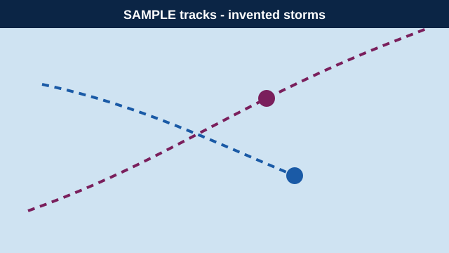

Hurricane Tracker Sample
Invented Atlantic-style storms with made-up names, positions and winds. This is not a real tracker.
Demo scenario
Active systems Sample

| System | Strength | Maximum winds | Position | Movement |
|---|---|---|---|---|
| Tropical Storm Quillon Sample | Tropical storm | 50 mph | Sample position: central basin, far from any coast | Moving west at 12 mph |
| Hurricane Tavish Sample | Category 2 hurricane | 105 mph | Sample position: open water, invented 900 miles out | Moving northwest at 9 mph |
| Tropical Depression Nine-X Sample | Tropical depression | 35 mph | Sample position: near invented islands | Moving north at 6 mph |
Quiet in the sample basin
No active systems in this sample scenario. The reference page also carries a “quiet in the Atlantic” style update; this text is invented.